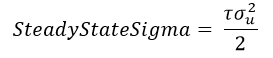
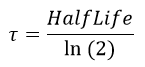

EstimatedParameter — Used for modeling of dynamically estimated parameters in the Extended Kalman Filter.
The EstimatedParameter resource allows the user to model dynamic parameters such as coefficient of drag (Cd), coefficient of solar radiation pressure (Cr), as well as observation biases as random processes in the Kalman filter. This resource currently implements only a first-order Gauss-Markov process. A user-configured instance of EstimatedParameter resource is assigned to the Spacecraft.SolveFors list to enable estimation using the modeled process.
The only solve-fors currently supported are spacecraft coefficient of drag (Cd) and atmospheric density scale factor (AtmosDensityScaleFactor). The EstimatedParameter resource is for the Kalman filter only and may not be used with the BatchEstimator.
See Also ExtendedKalmanFilter, Spacecraft Ballistic/Mass Properties
| Field | Description | ||||||||||||
|---|---|---|---|---|---|---|---|---|---|---|---|---|---|
| HalfLife | The half-life in seconds for propagation of both the estimated parameter value and sigma (uncertainty). The model process noise is derived from the steady-state sigma and half-life. See the remarks below for more details.
| ||||||||||||
| Model | Name of the random process model.
| ||||||||||||
| SolveFor | Name of the parameter to which the random process applies.
| ||||||||||||
| SteadyStateSigma | The steady-state parameter uncertainty. In the absence of measurements, the parameter uncertainty will return to this value. The model process noise is derived from the steady-state sigma and half-life. See the remarks below for more details.
| ||||||||||||
| SteadyStateValue | The steady-state parameter value. In the absence of measurements, the parameter value will return to this value. This value may be different from the initial value of the parameter, which will be taken from the value of the chosen solve-for as assigned on the Spacecraft object. See Remarks below for more details.
|
Creating an instance of EstimatedParameter that has the same name as a built-in solve for is not permitted. See SolveFors in Spacecraft Navigation for the list of built-in solve-for names.
When creating an instance of EstimatedParameter, the Model parameter must be assigned first, before any other parameters of the estimated parameter. See the example below for a demonstration.
Selection of spacecraft dynamic solve-fors is specified in the Spacecraft resource SolveFors list. As noted under Spacecraft Navigation, there are specific keywords available to invoke estimation of dynamic parameters in both the batch estimator and filter. Using any of those predefined parameter names in the list for a Kalman filter run invokes modeling of the parameter as a "random constant". In the random constant model, the estimated parameter and its uncertainty (sigma) both remain constant at their last estimated values during filter time updates. The random constant model does not add any process noise during propagation of the parameter estimate, and using this model can cause problems in the filter over time.
To instead model the parameter as a first-order Gauss-Markov process, the user should configure an instance of for the desired dynamic solve-for, and assign the instance of in the list, instead of using one of the predefined parameter names. See the Examples section below for details.
When running the filter in cold-start mode, the nominal (a-priori) value and uncertainty of the selected estimated parameter are the values specified on the Spacecraft object. For example, if EstimatedParameter.SolveFor = 'Cd' is chosen, the initial value of Cd is the value assigned on the Spacecraft.Cd parameter and the initial uncertainty of Cd is assigned on the Spacecraft.CdSigma parameter. The parameter then propagates forward in time according to a first-order Gauss-Markov random process. When running the filter in warm-start mode (using a filter InputWarmStartFile), the initial parameter value and covariance are retrieved from the specified record in the warm start file.
The variance of the parameter process noise is derived from the
user-specified SteadyStateSigma and
HalfLife. The variance of the Gauss-Markov process
noise,
|  |
where τ is related to the EstimatedParameter HalfLife by
|  |
This example illustrates how to configure estimation of the spacecraft coefficient of drag as a first-order Gauss-Markov process.
%
% Configure estimation of spacecraft coefficient of drag (Cd)
% as a first-order Gauss-Markov process.
%
Create EstimatedParameter FogmCd
FogmCd.Model = 'FirstOrderGaussMarkov'; % Must be assigned first, before any other options
FogmCd.SolveFor = 'Cd'
FogmCd.SteadyStateSigma = 0.1
FogmCd.HalfLife = 7200
%
% Use the configured instance of FogmCd in the spacecraft
% SolveFors list, instead of the built-in 'Cd'
%
Create Spacecraft EstSat;
EstSat.DateFormat = UTCGregorian;
EstSat.Epoch = '10 Jun 2010 00:00:00.000'
EstSat.CoordinateSystem = EarthMJ2000Eq
EstSat.DisplayStateType = Cartesian
EstSat.X = 576.8
EstSat.Y = -5701.1
EstSat.Z = -4170.5
EstSat.VX = -1.7645
EstSat.VY = 4.1813
EstSat.VZ = -5.9658
EstSat.DryMass = 10
EstSat.Cd = 1.75
EstSat.CdSigma = 0.1
EstSat.Cr = 1.8
EstSat.DragArea = 100
EstSat.SRPArea = 100
EstSat.Id = 'LEOSat'
EstSat.AddHardware = {GpsReceiver, GpsAntenna}
EstSat.SolveFors = {CartesianState, FogmCd}
EstSat.ProcessNoiseModel = SNC